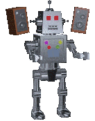

Media Attributions
I've found some neat media on the web - here's where I got them from (I am not responsible for any of the other content on these pages):
Boombox Robot - https://web.archive.org/web/20091025025156/http://geocities.com/killdoza/wtb6.html

Walking Robot - https://web.archive.org/web/20090901174344/http://geocities.com/killdoza/wtballstars.html

Under Construction Gif - https://web.archive.org/web/20091027100922/http://geocities.com/catacumbero/Programming/EstructurasdeSeleccion.html